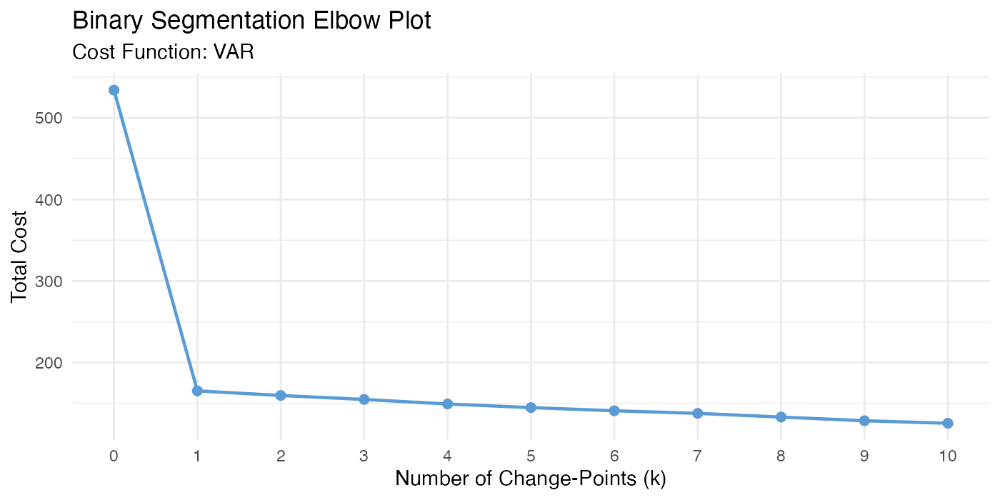
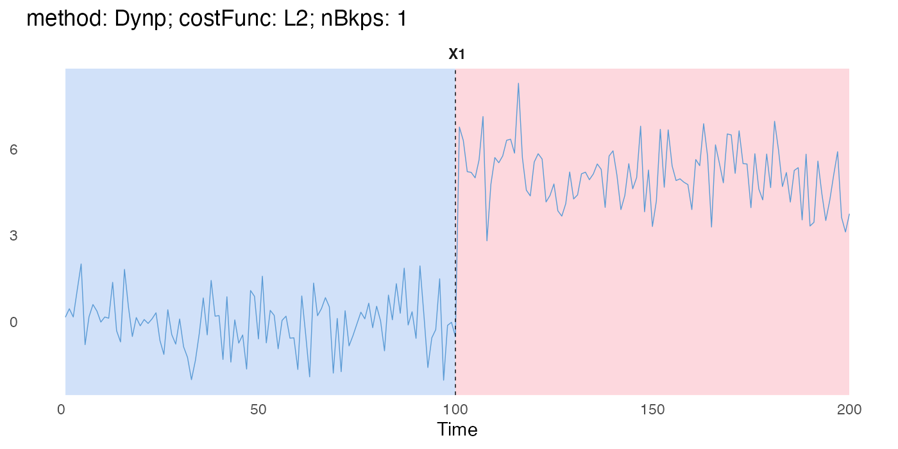

Model selection
model-selection.RmdThis chapter shows how to choose the number of change-points without
tuning pen directly: by reading the cost trajectory (the
elbow method), or by asking Dynp for the exact optimum for
each count.
Elbow method
binSeg and Window both build up their
segmentation by adding one change-point at a time: binSeg
by recursively splitting the segment that most reduces cost,
Window by ranking candidate local maxima by gain.
$getHistory() exposes that trajectory directly, so you can
inspect it, or choose the number of change-points via the “elbow
method”, instead of only tuning pen.
The examples below use the piecewise VAR series from Case studies:
set.seed(1)
tsMat = matrix(c(filter(rnorm(100), filter = 0.9, method = "recursive"),
filter(rnorm(100), filter = -0.9, method = "recursive")))
binSegObj = binSeg$new(minSize = 1L, jump = 1L, costFunc = costFunc$new("VAR"))
binSegObj$fit(tsMat)
#> Warning in private$.binSegModule$fit(): Some systems seem singular! Switch to
#> the approximate arma::solve()!
head(binSegObj$getHistory())
#> k cost added_bkp
#> 1 0 533.9504 NA
#> 2 1 165.2573 99
#> 3 2 159.6331 111
#> 4 3 154.7607 159
#> 5 4 149.1974 180
#> 6 5 144.7821 105The warning is expected: with minSize = 1L, some
candidate segments have too few observations to fit the VAR model, so
their cost falls back to an approximate solve.
$plotElbow() renders this as a ggplot
object (cost vs. number of change-points); look for where the marginal
decrease in cost flattens out to pick k.
binSegObj$plotElbow(maxK = 10)
Once a k is chosen, $predict() accepts it
directly via nBkps, which takes precedence over
pen when both are supplied:
binSegObj$predict(nBkps = 1)
#> [1] 99 200nBkps is treated as an upper bound, not a strict
requirement: for binSeg it returns its own best answer
among the splits it already explored, and for Window the
nBkps highest-gain local maxima it found. Neither is
guaranteed to be the globally optimal segmentation for that
count. Window in particular can only ever offer as many
change-points as it found local maxima for; if you ask for more,
$predict() returns what’s available and reports the
shortfall via a message rather than erroring.
Exact segmentation with Dynp
The caveat above (binSeg/Window returning
their own best answer for a given nBkps, not necessarily
the globally optimal one) is exactly what Dynp
addresses. It finds the segmentation that is exactly optimal for a
specified number of change-points, by building a full
dynamic-programming table instead of searching greedily. The cost is
complexity: the table takes O(nBkpsMax * M^2) time, where
M is the number of (minSize, jump)-admissible
positions, versus binSeg’s near-O(n log n)
greedy search or PELT’s pruned search for a penalty.
set.seed(1121)
signals = as.matrix(c(rnorm(100, 0, 1), rnorm(100, 5, 1)))
DynpObj = Dynp$new(minSize = 1L, jump = 1L) # nBkpsMax left NULL -> resolved at $fit()
DynpObj$fit(signals)
#> `nBkpsMax` not set; using 20L.$describe() shows the two fields specific to
Dynp: the user-set nBkpsMax (here left
NULL) and the resolvedNBkpsMax actually used,
capped at 20 by default.
DynpObj$describe(printConfig = TRUE)
#> Exact Dynamic Programming (Dynp)
#> minSize : 1L
#> jump : 1L
#> nBkpsMax : NULL (auto)
#> resolvedNBkpsMax : 20L
#> costFunc : "L2"
#> fitted : TRUE
#> n : 200L
#> p : 1L$predict(), $eval(), and
$plot() all work exactly as with
binSeg/Window/PELT, either via
nBkps or via a penalty:
DynpObj$predict(nBkps = 1)
#> [1] 100 200
DynpObj$predict(pen = 100) # same split, reached via a penalty instead
#> [1] 100 200
DynpObj$plot(main = "method: Dynp; costFunc: L2; nBkps: 1")
Since $fit() already computes the exact minimal cost for
every change-point count from 0 to
nBkpsMax in one pass (exposed via
$costPath()),
$getHistory()/$plotElbow() come for free here;
no extra search is needed the way
binSeg/Window would need to keep growing their
own nested sequence:
head(DynpObj$getHistory())
#> k cost
#> 1 0 1511.6991
#> 2 1 186.6857
#> 3 2 176.1339
#> 4 3 169.4885
#> 5 4 163.1693
#> 6 5 158.4455Unlike binSeg/Window, there is no
added_bkp column: each k’s solution is
independently exact and need not be nested inside the solution for
k+1, so “the one breakpoint added at this step” is not
generally well-defined. Use $predict(nBkps = k) to get the
full breakpoint set for a given k.